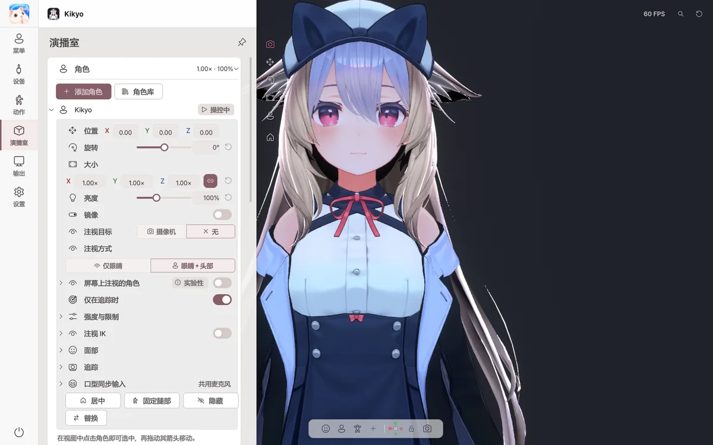
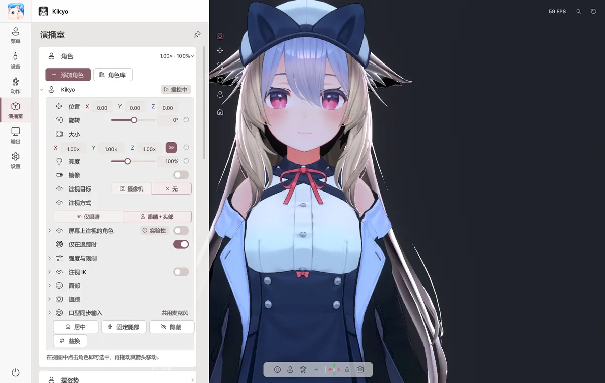
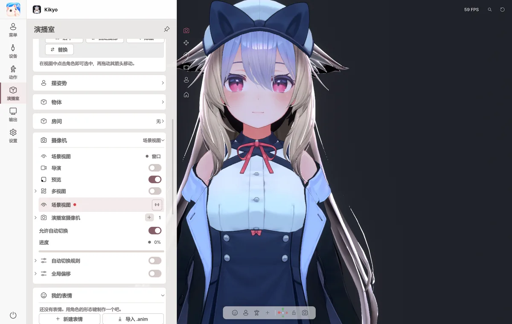
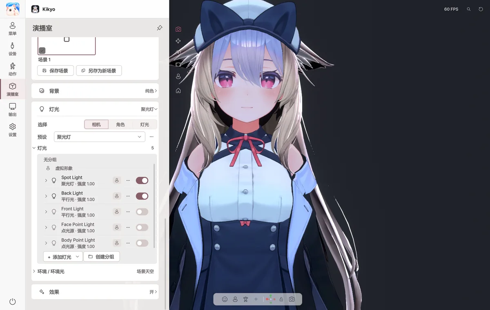

8. 工作室：场景、摄像机、灯光和效果
从 v2.0.0 起，原先的“场景”菜单更名为工作室。它统一保存背景、房间、道具、灯光、角色布局及摄像机。归属角色的道具和灯光会跟随角色进入其他场景；归属工作室的内容只存在于当前场景。应用窗口中的场景视图与 OBS 接收的直播摄像机画面可以不同。

场景保存与切换
- 打开工作室 → 场景，创建新场景或选取已保存的场景，然后安排背景、房间、角色、道具、灯光和镜头。
- 保存之后这些配置会记录在场景中。可以按名称搜索或使用缩略图选择。大幅修改之前建议另存一个备份场景。
- 服装专用道具、跟随人物的灯光适合设为归属角色；舞台背景、布景灯光适合设为归属工作室。
- 即使正在对外输出固定的工作室摄像机，仍可以在应用窗口中自由旋转场景视图进行编辑；这不会自动移动观众看到的摄像机。应在 OBS 中检查实际输出结果。
多角色控制 (Pro)

- 添加角色：让多个角色同时出现在同一工作室。先选中角色再修改位置、转向、比例或面部设置，否则可能改到错误的角色。
- 切换控制对象：将摄像头、iPhone、追踪器等输入转交给指定角色，其他角色根据设置保持最后动作或待机动作。
- 同步动作/相同动作：同一套追踪输入驱动多个不同身材的角色。关节角度会按照模型骨架适配，但不同身高的角色在世界空间中的位置不一定完全相同。
- 口型同步目标：全部／主角色／关闭：决定一个音频来源驱动所有角色的口型、仅当前主角色的口型，还是不进行共享口型同步。
- 位置 X/Y/Z改变舞台上的位置，旋转改变朝向，缩放改变角色相对灯光、道具和摄像机的大小。改变角色尺寸后需要重新检查镜头构图。
工作室摄像机 (Pro)

场景视图属于你的编辑操作界面。工作室摄像机保存独立的位置、方向、镜头和切换设置，并将画面送往 Spout2、NDI 等输出。切换直播摄像机不应抢走编辑窗口的控制权。
- 从**工作室 → 摄像机 → +**添加镜头。新建镜头通常以当前编辑角色为目标，并自动选择跟随和头部构图。
- 点击列表中的摄像机编辑位置方式、瞄准方式、镜头和切换效果；拖动列表行可调整镜头顺序。
- 若需要让摄像机显示当前编辑视角，先调整场景视图，再选择**⋯ → 放到当前视图**。直接更换摄像机模式可能恢复该模式保存的旧数值而产生画面跳变。
- 把需要的镜头设为直播输出，并在 OBS/NDI 接收端检查结果。
摄像机位置方式：实际移动规则

| 方式 | 摄像机如何移动 |
|---|---|
| 原地 | 固定在保存的世界位置 X/Y/Z，角色走远后可能离开画面；适合固定机位。 |
| 锁定目标 | 摄像机直接放在指定骨骼或目标点上。若选头部，镜头可能进入头部模型内部，更适合第一人称视角。 |
| 保持距离跟随 | 始终与目标保持指定的 X/Y/Z 偏移，人物移动时镜头随之移动。 |
| 环绕目标 | 在保持距离的基础上按环绕角度旋转镜头位置，可方便地切换正面、侧面和斜后方视角。 |
距离 X/Y/Z以米为单位，而不是画面像素。X 调整左右位置，Y 调整高度，Z 调整前后距离；正负方向随旋转绑定方式而变化。如果画面突然偏移，逐个小幅更改数值，或再用“放到当前视图”。
位置平滑 X/Y/Z决定镜头跟上目标的延迟：0 表示立即跟随，画面反应快但追踪抖动也容易显示；数值越大，移动越柔和但越滞后。只提高 Y 可以平滑坐下或跳跃时的上下变化。旋转平滑的 Yaw、Pitch、Roll 分别处理左右、上下和侧倾，只有当前绑定方式使用的轴才有作用。
“锁定目标旋转”究竟有什么效果？
假设摄像机在人物右侧 1 米、后方 2 米，人物向左转身 90°：
| 旋转绑定模式 | 摄像机位置会怎样变化 |
|---|---|
| 世界空间 | 偏移方向固定在房间的世界坐标。人物转身后，摄像机依然位于房间原来的方向，可能拍到侧脸。 |
| 简单跟随 | 大致保持在人物后方跟随，而不会严格保留左右偏移。 |
| 随目标旋转，上方为世界 | 随人物的水平朝向旋转偏移位置，同时让相机的上方参考世界的竖直方向，减少画面倾斜。 |
| 旋转，无侧倾 | 跟随左右及上下朝向变化，但排除人物歪头时的 Roll（侧倾）。 |
| 锁定目标 | 使用目标的 Yaw/Pitch/Roll 三轴完整旋转计算摄像机的相对位置。人物歪头时，摄像机可能跟着绕头部移动。 |
注意：锁定目标的旋转不等于镜头始终对着目标。它控制的是摄像机相对位置使用哪套坐标轴。如果希望人物的脸一直处于画面中，应再将独立的瞄准方式设为“直视目标”或“画面构图”。
瞄准方式：镜头看向哪里？
| 模式 | 实际拍摄效果 |
|---|---|
| 原地 | 保持保存的旋转角度，不会自动看向移动中的人物。 |
| 与目标同向 | 方向与目标面向的方向一致，并不是一直看着目标的脸。 |
| 直视目标 | 始终把镜头指向指定的目标点，适合固定位置的人像跟拍。 |
| 第一人称 | 根据水平/垂直初始角度决定视线，与头部位置绑定搭配可获得主观镜头。 |
| 画面构图 | 自动改变方向，使目标落在指定画面位置：X=0.5、Y=0.5 为正中央；X=0.33 约为左三分之一构图。 |
- 目标可以是角色或特定骨骼。选头骨会对点头动作更敏感，选躯干则构图较平稳。
- 注视点 X/Y/Z是目标局部位置上的偏移量（米）。希望镜头对准嘴部而非头骨中心，可以小幅降低 Y。
- 瞄准平滑越大，镜头跟随目标朝向变化越缓慢，可以减少抖动，但人物突然移动时会暂时偏离理想构图。
- 画面位置 X/Y（0–1）改变的是画面内构图，不会移动角色在场景中的实际坐标。
镜头、手持效果、转场

| 参数 | 调整后的变化 |
|---|---|
| 视野角 FOV（1–179°） | 较小的值像长焦：角色放大、背景较少；较大的值像广角：背景更多、边缘可能变形。 |
| 正交摄像机大小 | 越大显示的区域越广，人物越小；不使用普通透视缩短效果。 |
| 近/远裁剪距离 | 太近或太远的物体会被裁掉。近裁剪值过大可能切掉脸部和眼镜，远裁剪过小可能让背景消失。 |
| 画面宽高比 | 16:9 用于横屏直播，9:16 用于竖屏。改变后应重新检查构图。 |
| 手持晃动强度（0–1） | 越接近 0 越像三脚架，越大越有手持摄像机摇晃感。 |
| 晃动速度（0–2） | 越大晃动越频繁；这与晃动幅度是不同参数。 |
| 直接切换／交叉淡入淡出（0–5 秒） | 直接切换立即换镜头；淡入淡出在指定时间内混合两个画面。 |
| 摄像机动画时长（1–15 秒） | 一次摄像机运动的持续时间。循环次数和类型决定是否重播。 |
| 导演动画速度（0–5） | 提高速度可使相同的镜头运动更快完成。 |
| 导演 FOV 偏移（−30°～+30°） | 临时扩大或缩小当前镜头视野，不修改该摄像机保存的原始 FOV。 |
导演模式决定对外播出的镜头；多画面预览在你自己的界面显示多个摄像机画面，必须打开独立的多画面开关，开启导演不代表自动显示预览网格。网格大小 2–4决定每边有多少个格子；提高降采样 1–8可以减轻预览压力，但画面变模糊；降低更新速率可减轻负载，但预览动作会变慢。这些预览设置与实际广播分辨率不同。
自动切换按标签和权重选择候选摄像机。权重为 0 的候选不会选中，权重越高被选中的相对机会越大。上直播时重新开始动画决定镜头切换回来时动画是否重播。**摄像机独立 Spout2（Pro）**最多支持 3 路额外的独立来源，具体连接请阅读 OBS 设置。
房间、物体、骨骼绑定

房间位置 X/Y/Z会平移整套房间，旋转改变方向，缩放改变房间尺寸。物体位置改变摆放点，旋转改变朝向，解除同比例锁定后可以沿各轴分别缩放，但物体可能被拉长。固定在世界时不会跟着人物移动；归属角色会跟角色移动；绑定骨骼还能跟随手、头的动作和姿态。若道具穿过手掌或脸部，应逐步微调骨骼偏移与旋转。
背景
纯色直接设置背景颜色，绿/蓝幕可用于 OBS 抠像，但衣服上的同色部分也可能消失。透明背景适合 Spout2 和 NDI 的 Alpha 合成。应用编辑窗口看起来是黑色，不一定代表接收端没有透明通道。背景图片缩放调整占据区域，X/Y 偏移调整位置，覆盖/裁剪控制是否保持图片比例并裁去边缘。
灯光
- 强度越大，照亮的区域越亮，过高会使皮肤高光发白。**色温（约 1500–12000K）**较低偏暖橙色，较高偏冷蓝色。
- 方向光像太阳一样照射整体；点光源向周围扩散；聚光灯照亮锥形区域。提高范围会照得更远，扩大角度会让光斑更宽。
- 跟随位置使灯光跟随人物移动，朝向目标使灯光旋转并照向人物。固定位置+朝向目标相当于舞台追光灯；同时开启两项就是跟随人物移动的灯。
- 位置/角度平滑增大后灯光运动更柔和但更滞后；阴影强度增大后阴影变深，柔和度增大后边缘变模糊；环境光提亮没有直接受到灯光照射的部位。
- **体积聚光 (Pro)**可在空气中形成可见光束。范围与密度过高会造成朦胧感并增加 GPU 消耗。
画面效果
普通后处理在 Basic 和 Pro 均可使用，Beautify 与 HBAO 是 Pro 功能。
| 效果 | 数值调整会改变什么 |
|---|---|
| 抗锯齿 | 平滑边缘。FXAA 开销较低但略显模糊；SMAA 更保留线条；TAA 在快速动作时可能产生拖影。 |
| Bloom 辉光 | 强度控制发光亮度；提高阈值只让更亮的部分发光；增加扩散使光晕范围更广。 |
| 曝光/对比度/饱和度 | 分别改变整体亮度、明暗差与色彩鲜艳程度。饱和度降低到很低时近似黑白。 |
| 色温/色调 | 改变画面冷暖和绿/品红偏移，肤色对此尤其敏感。 |
| 暗角 | 使画面边缘变暗；强度决定暗度，柔和度决定过渡宽度。 |
| 胶片颗粒/色差 | 分别增加噪点与彩色边缘错位，数值高时旧电影或镜头缺陷感更强。 |
| 景深 | 焦点前后变模糊；自动面部对焦跟随人物；降低光圈 f 值会让背景更虚。 |
| 动态模糊 | 增大快门角度会使运动拖尾更长；提高采样数可能更流畅但占用更多 GPU。 |
| HBAO (Pro) | 增强眼眶、衣服缝隙和物体接触处的阴影，过高会显脏。 |
| Beautify (Pro) | 调整肤色及整体观感，与普通 Bloom/调色叠加过多会使画面失真。 |
使用透明背景时，一定要在 OBS 最终合成画面中检查边缘辉光、景深与暗角是否自然。